Agentes de IA y LLM
Agentes que clasifican, resumen, extraen datos y generan respuestas, con prompt engineering, salidas estructuradas y RAG sobre los datos de cada organización.
IA · Automatización · Integraciones · Datos
Ingeniera informática especializada en automatización e IA aplicada. Diseño, implemento y documento soluciones de principio a fin, desde el caso de uso hasta el flujo en producción.


Ingeniera informática con Máster en Informática Aplicada, especializada en aplicar inteligencia artificial y modelos de lenguaje (LLM) a procesos reales de negocio. Diseño agentes de IA y flujos con n8n que conectan herramientas mediante APIs y webhooks, e integran LLM para clasificar, resumir, extraer información y responder, reduciendo tareas manuales.
Combino análisis de datos, desarrollo web y validación funcional, con capacidad para trabajar entre negocio y tecnología.
Agentes que clasifican, resumen, extraen datos y generan respuestas, con prompt engineering, salidas estructuradas y RAG sobre los datos de cada organización.
Flujos que conectan la web con ventas, CRM, marketing y soporte mediante APIs y webhooks, para eliminar tareas manuales.
Análisis, limpieza y modelado de datos en PostgreSQL y MySQL, con informes y cuadros de mando para la toma de decisiones.
Sitios WordPress y PrestaShop adaptables: estructura de contenidos, temas, plugins y tiendas online.
Pruebas funcionales y de regresión de APIs e integraciones, seguimiento de incidencias en Jira y documentación de evidencias.
Fundación FREE · Córdoba, España · 2025 – Actualidad
Proyectos en remoto · Sep 2021 – 2025
Ministerio del Interior (MININT) · Cuba · Sep 2014 – Sep 2019
Geocuba · Las Tunas, Cuba
Dirección Provincial de Salud · Las Tunas, Cuba
Universidad de Las Tunas, Cuba · 2017 – 2020
Universidad de Las Tunas, Cuba · 2009 – 2014
¿Tienes un proceso que se podría automatizar o un proyecto con IA? Hablemos.